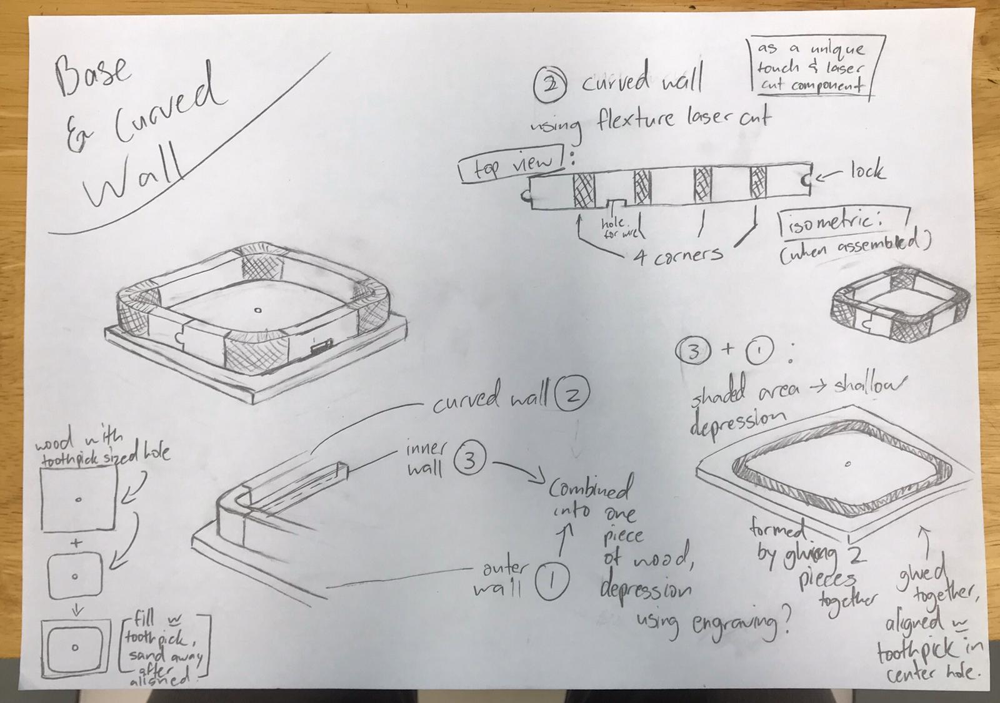
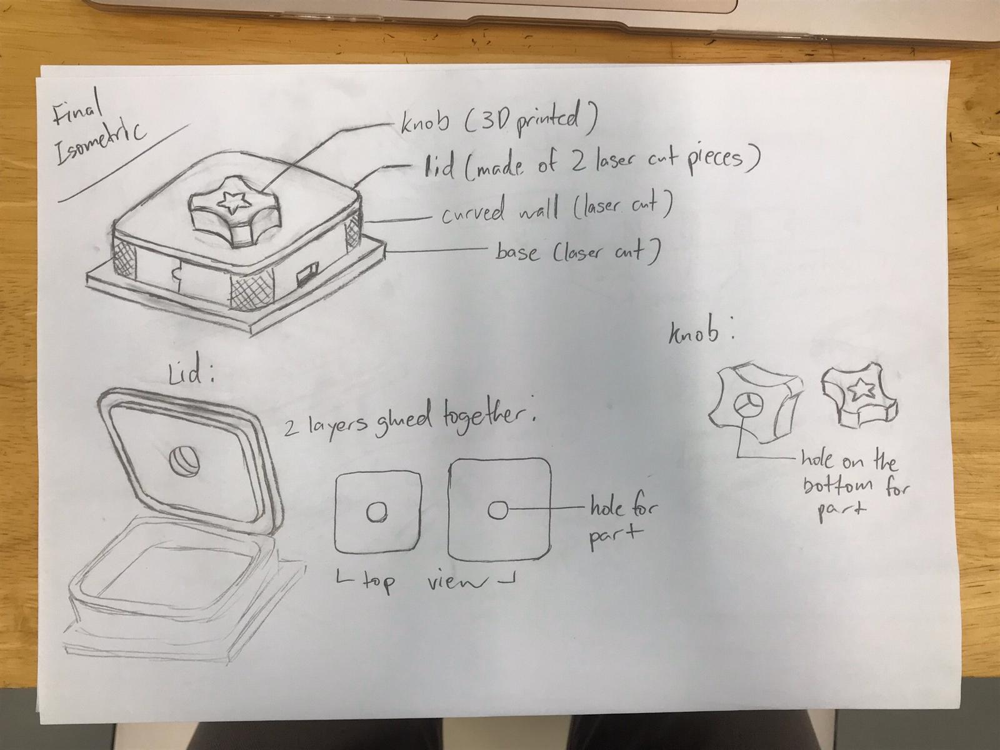
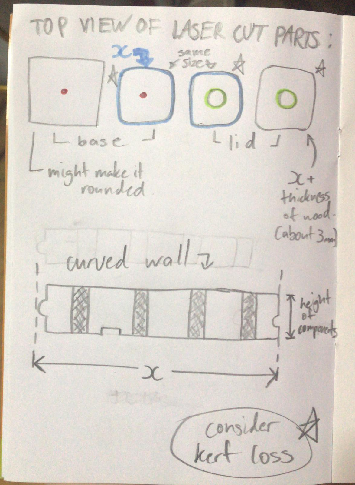

Mr Dorville provided a list of sample projects we could use and modify and I was interested in the PlexiCLock, Timelapse Motor and Volume Control Knob in particular. I decided to choose the volume control knob as it was my favorite and simpler compared to the other two. The components are also easier to obtain.
I have decided to make a combination of the volume knob that Mr Dorville found (as it includes steps for the user to have a sense of the scale, allows you to skip and pause songs by clicking), and the modern version's design, with a sleek look.
Instead of doing a knurl surface on the side of the knob, I will make grooves for the fingers on the sides.
After consulting my lecturer, here are the improvements and changes made:
The case will be made using laser cutting, with the "flexture laser cut box" method that allows a flat piece to be bent into a curved wall.
There are many designs and patterns for the flexible hinge. This adds to the aesthetic and checks the requirement of including a laser cut component in my project.
The lid and base will also be made using laser cutting. I have also added some spaces for the wires and components.
New Sketch:


Pieces to laser cut:

Instead of using the b10k rotary potentiometer provided in the kit, I will be using a rotary encoder kindly provided by my lecturer, as it has more
capabilities such as the push button switch that will allow me to make the controller pause and play the music when the button is pressed.
For the wood, there are a few different thickness available in the lab: 2.5mm, 3mm, 4mm, and 5mm. I will be using 2.5mm so that the curve will
have a lower risk of breaking.
For the flexible laser cut part, I will be using the design from this website (lasercut flexible bracelet) as reference and modifying it to my liking.
Plain design reference
For the volume control knob programming,
I tried linking up the arduino board to the rotary encoder, and using the codes provided by several websites to programme it.
Although I tried different codes from different websites, they didn’t work because I was using the Arduino Uno CDC, while
the boards used in the tutorials online were the Pro Micro and Nano. I received error messages telling me that HID is needed for volume control.
For codes which I successfully uploaded onto the board, no output was given when testing it. I even tried plugging it into a Windows computer, but to no avail.
I also checked with my dad and he confirmed that HID is needed for volume control, saying that I needed to change the board. Thankfully, my lecturer assured me that amongst the two alternatives (Arduino Pro Micro (ATMega32U4) or the Digispark (ATTiny85)), the Digispark was available at FABLAB.
My wiring attempt: